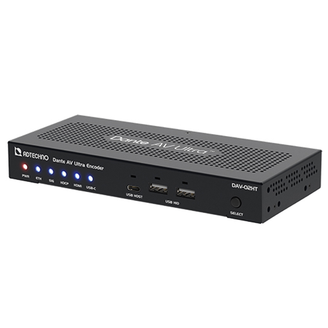
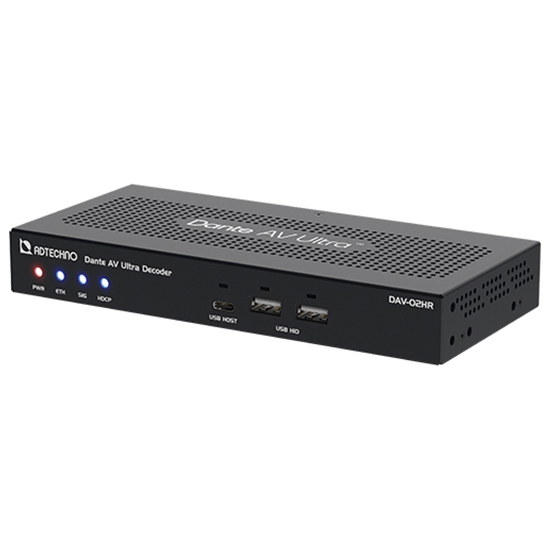

何をどこへ送る？
入力機器、画面数、切り替えたい送り先を整理。
映像をつなぐ・整える ↗EQUIPMENT / 45
Dante AV Ultra映像伝送
映像と音声の送り先を、対応ネットワーク上で構成する。
KEY SPECIFICATIONS

画像を大きく見る ＋画像出典：ADTECHNO 公式製品資料
01 / ROLE & FLOW
実際の配線・端子構成は案件に合わせて決めます。

画像を拡大 ↗送信側とは別の機器です。HDMI出力と画面の条件を合わせ、対応ネットワーク上で映像の送り先を設定します。
02 / BEFORE YOUR BRIEF
入力機器、画面数、切り替えたい送り先を整理。
管理可能なスイッチ、マルチキャスト、IGMP、QoSと給電を確認。
音声、USB/KVM、RS-422の必要性と担当者を共有。
03 / CHOOSING THE RIGHT TOOL
複数の送り先や操作場所を含め、映像伝送をネットワークとして設計したい場面に。送信と受信を一緒に検討し、必要な台数と経路を決めます。
一般的なLANへつなぐだけで使えるHDMI延長セットではありません。映像を受けるには同じビデオコーデックに対応する機器が必要で、音声用Dante機器を映像受信器としては使えません。2機種が1組で付属するという表示でもありません。
1GbEマネージドスイッチなどの条件を確認し、Dante Controllerで信号経路を設定します。USB-C映像入力にはDP Alt Mode対応が必要です。各製品の内容物は本体、専用ブラケット、ゴム足、クイックガイド。電源はPoE+または12V DCで、ACアダプターは別売です。ネットワーク機器・配線・ラック部材を含む範囲は個別に整理します。
参考資料：メーカー公式仕様 ↗（2026年11月3日照合）
送信機器と表示先の型式・台数、映像形式、音声・USB/KVM・制御、既存ネットワーク、PoE+またはAC給電、経路設定と確認作業の範囲をお聞かせください。本体・周辺機材・搬入出・設営・本番操作・撤去を分けて、必要な範囲を整理します。セットの付属品や人員が自動で含まれる表示ではありません。
04 / RELATED EQUIPMENT
SonifexはSDI音声とDante音声を受け渡す機器、NEXは別方式の映像伝送機器です。どちらもDAV-02の映像受信器ではありません。